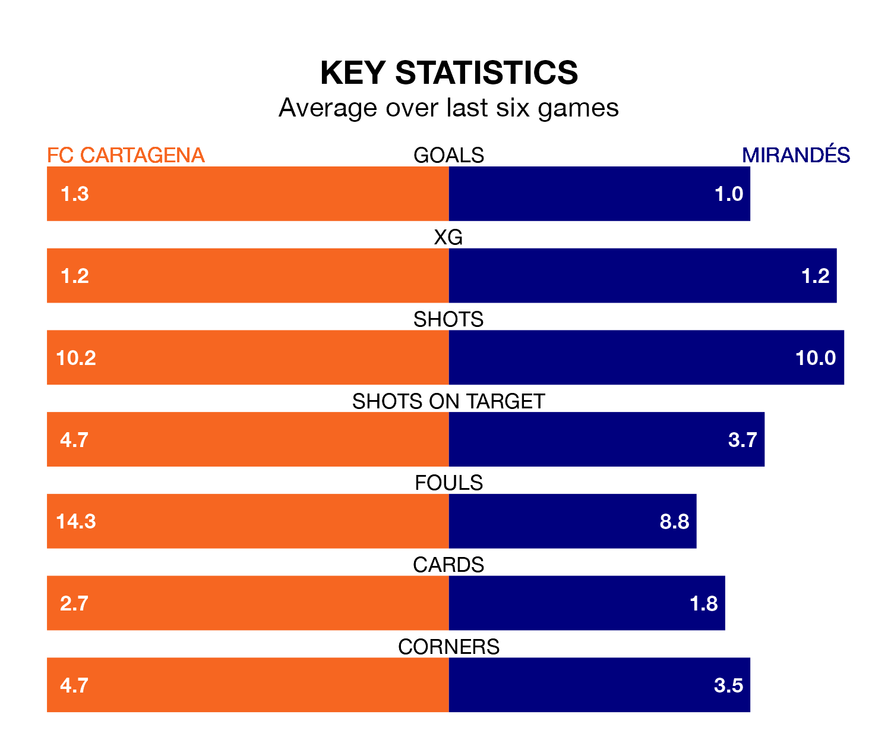

Mirandés travel to FC Cartagena on Sunday in the Segunda División.
The visitors come into the game on the back of a win in their last match, having beaten Villarreal B 3-0 at home, with goals from Mathis Lachuer, Gabriel Martínez Aguilera and Carlos Martín.
Cartagena, meanwhile, drew their last match, 1-1 against Albacete Balompié, with their goal scored by José Fontán.
With 25 goals in 25 games so far this season, Cartagena are scoring at below the league average rate with 1.0 goals per game. And they are conceding more than average, letting in 36 goals at a rate of 1.4 per game.
Mirandés, meanwhile, are above average scorers, with 1.3 goals per game, compared to a league average of 1.2. They have conceded 1.2 goals per game.
In the last 10 years, Cartagena and Mirandés have played each other on eight occasions. Cartagena won three of them and Mirandés five.
On average, Cartagena scored 1.2 goals and Mirandés 1.6 in those matches.
Their last meeting was on October 29, when Mirandés won 2-1 at home.
In Martín Domínguez, the away team have one of the league's most on-form strikers so far this season. He has notched 10 goals in 23 appearances, to sit third in the scoring charts.
His goal rate of one every 163 minutes is quicker than that of Alfredo Ortuño Martínez, the hosts' top scorer with a goal every 240 minutes, and a total of seven goals in 23 games.
Cartagena are 18th in the table after 25 games, of which they have won six and drawn seven, earning 25 points.
Mirandés are four places ahead of Cartagena in 14th, with eight wins and nine draws putting them on 33 points.
The home side are in mixed form in the Segunda División, with three wins and a draw from their last six games.
With two wins and three draws over that period, Mirandés's form is slightly worse – they have taken nine points from 18, compared to Cartagena's 10.
Updated: 10:28 (UTC), 06/02/24